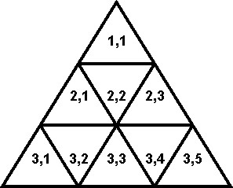
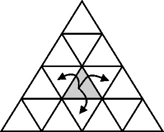

|
| Contest: NOV09 GOLD Division |
|
|
|
|
**********************************************************************
GOLD PROBLEMS
**********************************************************************
Three problems numbered 1 through 3
**********************************************************************
Problem 1: Lights [Neal Wu, 2007]
Bessie and the cows were playing games in the barn, but the power
was reset and the lights were all turned off. Help the cows get all
the lights back on so they can resume their games.
The N (1 <= N <= 35) lights conveniently numbered 1..N and their
switches are arranged in a complex network with M (1 <= M <= 595)
clever connection between pairs of lights (see below).
Each light has a switch that, when toggled, causes that light --
and all of the lights that are connected to it -- to change their
states (from on to off, or off to on).
Find the minimum number of switches that need to be toggled in order
to turn all the lights back on.
It's guaranteed that there is at least one way to toggle the switches
so all lights are back on.
PROBLEM NAME: lights
INPUT FORMAT:
* Line 1: Two space-separated integers: N and M.
* Lines 2..M+1: Each line contains two space-separated integers
representing two lights that are connected. No pair will be
repeated.
SAMPLE INPUT (file lights.in):
5 6
1 2
1 3
4 2
3 4
2 5
5 3
INPUT DETAILS:
There are 5 lights. Lights 1, 4, and 5 are each connected to both lights 2
and 3.
OUTPUT FORMAT:
* Line 1: A single integer representing the minimum number of switches
that need to be flipped in order to turn on all the lights.
SAMPLE OUTPUT (file lights.out):
3
OUTPUT DETAILS:
Toggle the switches on lights 1, 4, and 5.
**********************************************************************
Problem 2: Who Brings the Cookies? [Ye Wang, 2009]
Farmer John's N (1 <= N <= 1,000) cows conveniently numbered 1..N
decided to form M (1 <= M <= 100) study groups. A total of S_i (1
<= S_i <= 19) cows study in group G_i (namely cows G_i1, G_i2, ...).
A cow might study in more than one study group.
For each study group, one cow in the group must be chosen to bring
cookies to the meeting. Cookies are costly and require time to
acquire, so the cows want to divide the work of bringing cookies
as fairly as possible.
They decided that if a cow attends meetings with size c_1, c_2,
..., c_K, she is only willing to bring cookies to at most ceil(1/c_1
+ 1/c_2 + ... + 1/c_K) meetings.
Figure out which cow brings cookies to each meeting. If this isn't
possible, just output "-1". Choose any solution if more than one is
possible.
PROBLEM NAME: cookie
INPUT FORMAT:
* Line 1: Two space-separated integers: N and M
* Lines 2..M+1: Line i+1 contains many space-separated integers: S_i,
G_i1, G_i2, ...
SAMPLE INPUT (file cookie.in):
5 6
3 2 4 5
2 1 3
3 1 2 3
1 1
2 2 5
3 2 3 4
INPUT DETAILS:
Cow1 can bring cookies to at most 2 meetings, cow2 can bring 2, cow3 can
bring 2, cow4 can bring 1, and cow5 can bring 1.
OUTPUT FORMAT:
* Lines 1..M: If a mapping is possible, line i contains the number of
the cow who brings cookies to study group i. Otherwise, line 1
contains just the integer -1.
SAMPLE OUTPUT (file cookie.out):
5
1
3
1
2
4
**********************************************************************
Problem 3: Cow Rescue [Ye Wang, 2009]
Bessie is trapped in a triangular maze with N rows (1 <= N <=
1,000,000). A three row maze is shown below:

The i'th row of the maze contains 2*i-1 triangles. Numbering from
the left, the triangles are named (i,1), (i,2), and so on.
Bessie can travel to the (often three) triangles which share an
edge with her current triangle. For example, if she is at (3, 3),
she can travel to (3, 2), (3, 4) and (4, 4). Bessie takes one minute
to travel from one triangle to the next.

FJ has learned the Bessie is trapped and knows by tracking her
iPhone that she starts her exit trek at triangle (Si,Sj). FJ's love
for Bessie knows no bounds so he wants her back in the minimum
possible time.
The maze has M (1 <= M <= 10,000) exits found in locations throughout
the set of triangles. Any one of these will enable Bessie to escape.
Once she enters an exit triangle, she leaves the maze in just one
more minute.
Find the minimum time in minutes, T, required for Bessie to exit
the maze and report the optimal exit location she uses, (OUTi,
OUTj). If more than one location requires only T minutes, output
the location with the smallest row. If two optimal rows are the
same, output the one with smaller column.
PROBLEM NAME: rescue
INPUT FORMAT:
* Line 1: Two space-separated integers: N and M
* Line 2: Two space-separated integers: Si and Sj
* Lines 3..M+2: Line i+2 contains two space-separated integers that
are the triangle location of exit i: Ei and Ej
SAMPLE INPUT (file rescue.in):
4 2
2 1
3 5
4 4
OUTPUT FORMAT:
* Line 1: Two space-separated integers: OUTi and OUTj
* Line 2: A single integer: T
SAMPLE OUTPUT (file rescue.out):
4 4
4
**********************************************************************